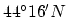
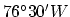
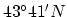
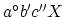
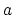
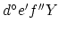
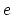
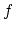

| C: Travelling Distance |
Latitudes and longitudes use degrees as their unit. Degrees use minutes and seconds instead of plain decimal digits. 1 degree has 60 minutes, and 1 minute has 60 seconds. Only seconds have decimal digits. For example, Kingston, Ontario, is located at , , and Toronto, Ontario, is located at , .
Assuming the Earth is a perfect sphere, the mean radius of the Earth is 6371.01 km. If you are given the latitude and longitude of two locations, can you find out the minimum walking distance between the two locations?
The first four represent the latitude. is either the character `N' or `S', and the latitude is  ( degrees, minutes, and seconds). The next four represent the longitude. is either the character `E' or `W', and the longitude is . Each is separated by a space. , , ,  are integers, while and  are floating point numbers with two decimal digits.
The output consists of  lines, each lines contain a number with two decimal digits, in km, the minimum surface distance between the two locations on Earth. Note that you must travel on the surface of the Earth. You can assume that there is no mountain between the two places.
lines, each lines contain a number with two decimal digits, in km, the minimum surface distance between the two locations on Earth. Note that you must travel on the surface of the Earth. You can assume that there is no mountain between the two places.
2 44 16 0.00 N 76 30 0.00 W 43 41 0.00 N 79 38 0.00 W 22 18 12.34 N 114 10 56.78 E 49 11 43.21 N 123 10 7.65 W
258.97 10255.47